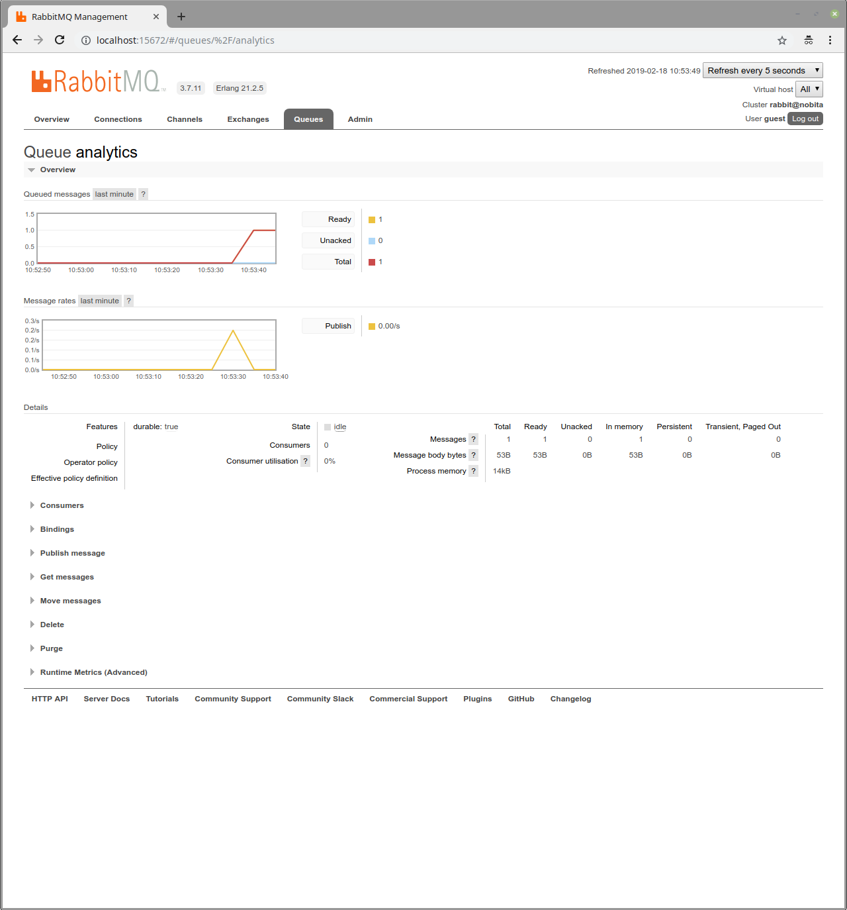
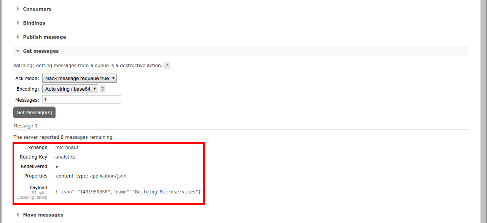
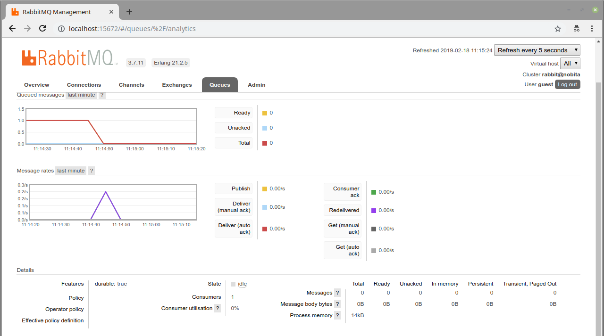

RabbitMQ and the Micronaut Framework - Event-Driven Applications
Use RabbitMQ to communicate between your Micronaut applications.
On this guide
In this section
Getting Started
In this guide, we will create a Micronaut application written in Kotlin.
In this guide, we will create two microservices that will use RabbitMQ to communicate with each other in an asynchronous and decoupled way.
RabbitMQ is an open-source message-broker software that originally implemented the Advanced Message Queuing Protocol (AMQP) and has since been extended with a plug-in architecture to support Streaming Text Oriented Messaging Protocol (STOMP), Message Queuing Telemetry Transport (MQTT), and other protocols.
What you will need
To complete this guide, you will need the following:
-
Some time on your hands
-
A decent text editor or IDE (e.g. IntelliJ IDEA)
-
JDK 21 or greater installed with
JAVA_HOMEconfigured appropriately
Solution
We recommend that you follow the instructions in the next sections and create the application step by step. However, you can go right to the completed example.
-
Download and unzip the source
Writing the application
Let’s describe the microservices you will build through the guide.
-
books- It returns a list of books. It uses a domain consisting of a book name and ISBN. It also publishes a message in RabbitMQ every time a book is accessed. -
analytics- It connects to RabbitMQ to update the analytics for every book (a counter). It also exposes an endpoint to get the analytics.
Books microservice
Create the books microservice using the Micronaut Command Line Interface or with Micronaut Launch.
mn create-app --features=rabbitmq,reactor,graalvm example.micronaut.books --build=maven --lang=kotlin
If you don’t specify the --build argument, Gradle with the Kotlin DSL is used as the build tool. If you don’t specify the --lang argument, Java is used as the language.If you don’t specify the --test argument, JUnit is used for Java and Kotlin, and Spock is used for Groovy.
|
If you use Micronaut Launch, select Micronaut Application as application type and add the rabbitmq, reactor, and graalvm features.
The previous command creates a directory named books and a Micronaut application inside it with default package example.micronaut.
Create a BookController class to handle incoming HTTP requests into the books microservice:
The previous controller responds a List<Book>. Create the Book POJO:
package example.micronaut
import io.micronaut.serde.annotation.Serdeable
@Serdeable
data class Book(val isbn: String, val name: String)To keep this guide simple there is no database persistence, and the list of books is kept in memory in BookService:
package example.micronaut
import jakarta.annotation.PostConstruct
import jakarta.inject.Singleton
@Singleton
class BookService {
private val bookStore: MutableList<Book> = mutableListOf()
@PostConstruct
fun init() {
bookStore.add(Book("1491950358", "Building Microservices"))
bookStore.add(Book("1680502395", "Release It!"))
bookStore.add(Book("0321601912", "Continuous Delivery"))
}
fun listAll(): List<Book> = bookStore
fun findByIsbn(isbn: String): Book? =
bookStore.firstOrNull { it.isbn == isbn }
}Analytics microservice
Create the analytics microservice using the Micronaut Command Line Interface or with Micronaut Launch.
mn create-app --features=rabbitmq,graalvm example.micronaut.analytics --build=maven --lang=kotlin
If you don’t specify the --build argument, Gradle with the Kotlin DSL is used as the build tool. If you don’t specify the --lang argument, Java is used as the language.If you don’t specify the --test argument, JUnit is used for Java and Kotlin, and Spock is used for Groovy.
|
If you use Micronaut Launch, select Micronaut Application as application type and add the rabbitmq and graalvm features.
To keep this guide simple there is no database persistence, and the books analytics is kept in memory in AnalyticsService:
Create the Book POJO used by AnalyticsService:
package example.micronaut
import io.micronaut.serde.annotation.Serdeable
@Serdeable
data class Book(val isbn: String, val name: String)The previous service responds a List<BookAnalytics>. Create the BookAnalytics POJO:
package example.micronaut
import io.micronaut.serde.annotation.Serdeable
@Serdeable
data class BookAnalytics(val bookIsbn: String, val count: Long)Write a test:
Create a Controller to expose the analytics:
|
The application doesn’t expose the method |
To run the tests:
./mvnw testModify the Application class to use dev as a default environment:
The Micronaut framework supports the concept of one or many default environments. A default environment is one that is only applied if no other environments are explicitly specified or deduced.
package example.micronaut
import io.micronaut.context.env.Environment.DEVELOPMENT
import io.micronaut.runtime.Micronaut.build
fun main(args: Array<String>) {
build()
.args(*args)
.packages("example.micronaut")
.defaultEnvironments(DEVELOPMENT)
.start()
}Create src/main/resources/application-dev.properties. The Micronaut framework applies this configuration file only for the dev environment.
Test Resources
When the application is started locally, either under test or while running locally, resolution of the rabbitmq.uri property is detected and the Test Resources service will start a local RabbitMQ docker container, and inject the properties required to use this as the message broker.
When running under production, you should replace this property with the location of your production message broker via an environment variable.
RABBITMQ_URI=amqp://production-server:5672For more information, see the RabbitMQ section of the Test Resources documentation.
Running the application
Run the books microservice:
./mvnw mn:run16:35:55.614 [main] INFO io.micronaut.runtime.Micronaut - Startup completed in 576ms. Server Running: http://localhost:8080Run analytics microservice:
./mvnw mn:run16:35:55.614 [main] INFO io.micronaut.runtime.Micronaut - Startup completed in 623ms. Server Running: http://localhost:8081You can run curl commands to test the application:
curl http://localhost:8080/books[{"isbn":"1491950358","name":"Building Microservices"},{"isbn":"1680502395","name":"Release It!"},{"isbn":"0321601912","name":"Continuous Delivery"}]curl http://localhost:8080/books/1491950358{"isbn":"1491950358","name":"Building Microservices"}curl http://localhost:8081/analytics[]Please note that getting the analytics returns an empty list because the applications are not communicating to each other (yet).
Books microservice
Via Test Resources, the Micronaut application will connect to a RabbitMQ instance running inside Docker so it is not necessary to add anything to application.properties.
In case you want to change the configuration, add the following:
rabbitmq.uri=amqp://rabbitmq-server:5672Create RabbitMQ exchange, queue and binding
Before being able to send and receive messages using RabbitMQ, it is necessary to define the exchange, queue, and binding. One option is to create them directly in the RabbitMQ Admin UI available on port 15672.
Use guest for both username and password.
|
Another option is to create them programmatically.
Create the class ChannelPoolListener:
Create RabbitMQ client (producer)
Let’s create an interface to send messages to RabbitMQ. The Micronaut framework will implement the interface at compilation time:
Send Analytics information automatically
Sending a message to RabbitMQ is as simple as injecting AnalyticsClient and calling updateAnalytics method. The goal
is to do it automatically every time a book is returned, i.e., every time there is a call to http://localhost:8080/books/{isbn}.
To achieve this we will create an Http Server Filter.
Create the AnalyticsFilter class:
Analytics microservice
Create RabbitMQ exchange, queue and binding
As we already did in Books Microservice, let’s create the class ChannelPoolListener to define the exchange, queue
and binding:
package example.micronaut
import com.rabbitmq.client.BuiltinExchangeType
import com.rabbitmq.client.Channel
import io.micronaut.rabbitmq.connect.ChannelInitializer
import java.io.IOException
import jakarta.inject.Singleton
@Singleton
class ChannelPoolListener : ChannelInitializer() {
@Throws(IOException::class)
override fun initialize(channel: Channel, name: String) {
channel.exchangeDeclare("micronaut", BuiltinExchangeType.DIRECT, true)
channel.queueDeclare("analytics", true, false, false, null)
channel.queueBind("analytics", "micronaut", "analytics")
}
}| Instead of copy-paste the class in every project it would be better to create a new Gradle (or Maven) module and share it among all the microservices. |
Create RabbitMQ consumer
Create a new class to act as a consumer of the messages sent to RabbitMQ by the Books Microservice. The Micronaut framework will
implement the consumer at compile time. Create AnalyticsListener:
Running the application
Run books microservice:
./mvnw mn:run16:35:55.614 [main] INFO io.micronaut.runtime.Micronaut - Startup completed in 576ms. Server Running: http://localhost:8080Execute a curl request to get one book:
curl http://localhost:8080/books/1491950358{"isbn":"1491950358","name":"Building Microservices"}Open RabbitMQ Admin UI on http://localhost:15672 and use guest for both username and password. Select queues and
analytics queue. You can see that there is a message in the queue.

Expand the "Get messages" option and get one message. You can see all the information: exchange, routing key, and the
payload serialized to JSON:

Run analytics microservice:
./mvnw mn:run16:35:55.614 [main] INFO io.micronaut.runtime.Micronaut - Startup completed in 623ms. Server Running: http://localhost:8081The application will consume and process the message automatically after the startup. Go to RabbitMQ Admin UI and check that the message has been consumed:

Now, run a curl to get the analytics:
curl http://localhost:8081/analytics[{"bookIsbn":"1491950358","count":1}]Generate a Micronaut Application Native Executable with GraalVM
We will use GraalVM, an advanced JDK with ahead-of-time Native Image compilation, to generate a native executable of this Micronaut application.
Compiling Micronaut applications ahead of time with GraalVM significantly improves startup time and reduces the memory footprint of JVM-based applications.
Only Java and Kotlin projects support using GraalVM’s native-image tool. Groovy relies heavily on reflection, which is only partially supported by GraalVM.
|
GraalVM Installation
sdk install java 25.0.2-graalFor installation on Windows, or for a manual installation on Linux or Mac, see the GraalVM Getting Started documentation.
The previous command installs Oracle GraalVM, which is free to use in production and free to redistribute, at no cost, under the GraalVM Free Terms and Conditions.
Alternatively, you can use the GraalVM Community Edition:
sdk install java 25.0.2-graalceNative Executable Generation
To generate a native executable using Maven, run:
./mvnw package -Dpackaging=native-imageThe native executable is created in the target directory and can be run with target/micronautguide.
It is possible to customize the name of the native executable or pass additional build arguments using the Maven plugin for GraalVM Native Image building. Declare the plugin as follows:
Start the native executables for the two microservices and run the same curl request as before to check that everything works with GraalVM.
Next Steps
Read more about RabbitMQ support in the Micronaut framework.
License
| All guides are released with an Apache License 2.0 for the code and a Creative Commons Attribution 4.0 license for the writing and media (images). |